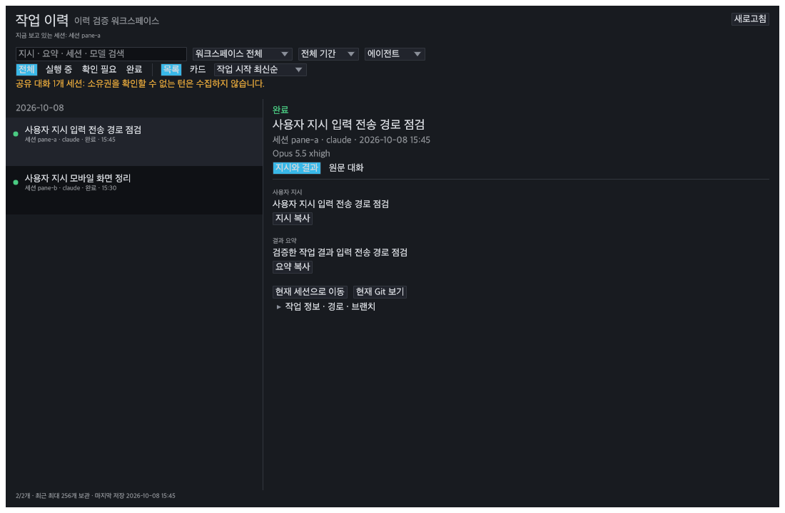
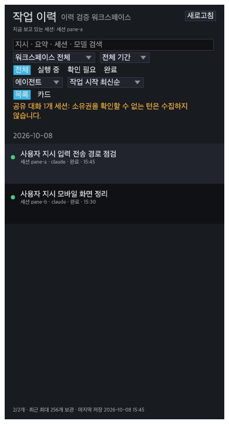
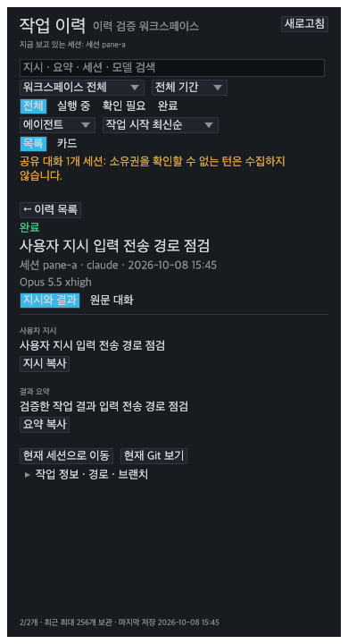

승인한 HTML 시안을 실제 egui 이력 탭에 적용했습니다. 아래는 제품 렌더러를 격리 테스트에서 실행한 화면입니다. 예시 데이터이며 실행 중 앱이나 PWA 실기기 캡처는 아닙니다.
날짜별 68pt 목록 · 시작 시각 최신순 · 선택한 지시/결과와 원문 상세 · 세션/기간/상태/에이전트 검색 · 내부 스크롤 · 좁은 화면의 목록↔상세 전환. 스타일은 앱의 공통 테마와 기본 글꼴을 따릅니다.



공유 대화는 고유한 pane 지시와 정확히 일치하는 턴만 수집합니다. 출처를 증명할 수 없는 턴은 계속 차단하며, 오래된 실행/대기 상태는 현재 상태를 확인한 것으로 표시하지 않습니다. Git은 작업 시점 변경량과 구분해 ‘현재 Git 보기’로 연결합니다.
검증 명령: cargo test -p deppy-sijo approved_history 및 opt-in approved_history_render_evidence -- --ignored. 이번 작업은 소스 적용과 테스트 단계입니다.